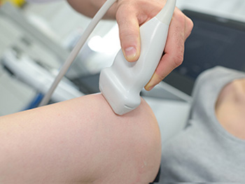
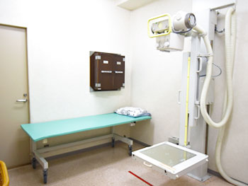
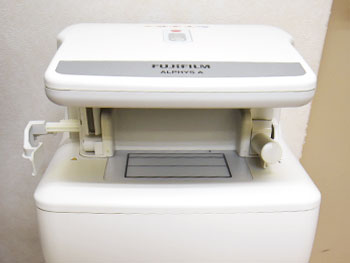

当院のご紹介
当院は、痛みや動きの不安を抱える方が安心して相談できる整形外科を目指しています。
医師とセラピストが連携し、症状だけでなく生活のしづらさにも丁寧に向き合います。
診療とリハビリの両面から支えることで、地域の皆さまが自分らしく過ごせる毎日を大切にしています。
当院でできる検査
超音波（エコー）検査
超音波を患部に当てて体の中を映し出し、筋肉や関節の動きや状態をその場で確認できます。
アキレス腱断裂、肉離れ、足関節捻挫（靭帯損傷）、ガングリオンなどに有効です。

X線（レントゲン）検査
X線で骨の状態を撮影し、骨折や変形がないかを調べる基本的な検査です。
骨折、腫瘍、外傷、感染症また、関節リウマチや変形性関節症などの診断に有効です。

骨密度測定
骨を構成しているカルシウムなどの量を測り、骨の強度を調べる検査です。
当院では、前腕で測定を行うSEXA法で検査を行います。
血液検査も一緒に行うとさらに詳しく調べることが可能です。

施設概要
| 運営法人 | 医療法人社団やまびこ |
|---|---|
| 施設名 | 玉川学園前整形外科リウマチ科 |
| 院 長 | 中島 大介 |
| 所在地 | 〒194-0041 東京都町田市玉川学園7-4-4 クリーピア野口2・3階 |
| 診療科目 | 整形外科、リウマチ科、リハビリテーション科 |
| 設 立 | 2024年4月1日 |
| 診療時間 | 午前 9:00～13:00、 午後 14:30～18:30 (最終受付 18:15) |
| 休診日 | 土曜午後、日曜、祝日 |
| 取扱保険 | 各種健康保険、労災保険、自賠責保険（交通事故） |